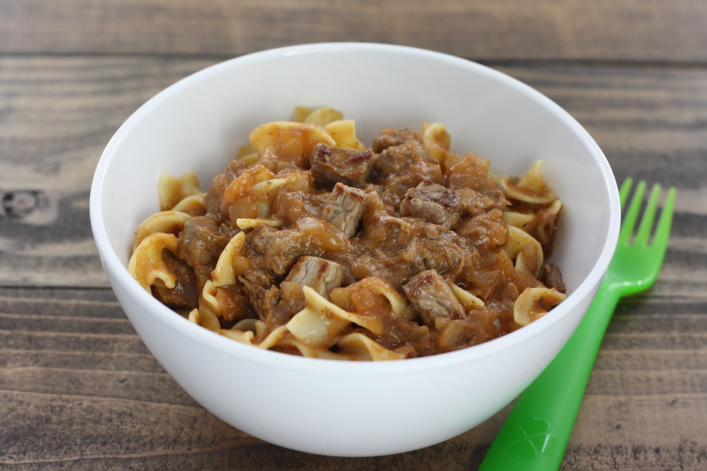

Home Page
Simple Beef Stroganoff
by Brenda

recipe by Brenda on allrecipes.com
This creamy beef stroganoff is easy to make with ground beef and served with egg noodles. It's ready to serve
in just 20 minutes making it a great choice for busy weeknights. Garnish with freshly chopped parsley.
Ingredients
- 1 pound ground beef
- 8 ounce egg noodles
- 10.5 ounce fat-free condensed cream of mushroom soup
- 1 tablespoon garlic powder, or to taste
- 1/2 cup sour cream
- salt and ground black pepper to taste
Recipe
- Sauté ground beef in a large skillet over medium heat until browned and crumbly; 5 to 10 minutes.
- Meanwhile, fill a large pot with lightly salted water and bring to a rapid boil. Cook egg noodles at a boil
until tender yet firm to the bite, 7 to 9 minutes. Drain and set aside.
- Drain and discard any fat from the cooked beef. Stir condensed soup and garlic powder into the beef. Simmer
for 10 minutes, stirring occasionally.
- Remove beef from the heat. Add egg noodles and stir to combine. Stir in sour cream and season with salt
and pepper.